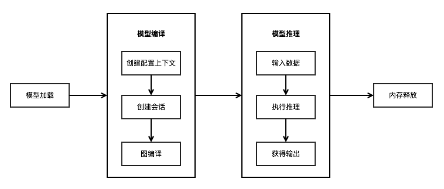

使用Runtime执行推理（C++）
Windows Linux Android C++ 推理应用 模型加载 数据准备 中级 高级

概述
通过MindSpore Lite模型转换工具转换成.ms模型后，即可在Runtime中执行模型的推理流程。本教程介绍如何使用C++接口执行推理。
使用MindSpore Lite推理框架主要包括以下步骤：
模型加载：从文件系统中读取由模型转换工具转换得到的
.ms模型，通过mindspore::lite::Model::Import导入模型，进行模型解析，创建得到Model *。创建配置上下文：创建配置上下文Context，保存会话所需的一些基本配置参数，用于指导图编译和图执行。
创建会话：创建LiteSession会话，并将上一步得到的Context配置到会话中。
图编译：执行推理之前，需要调用LiteSession的
CompileGraph接口进行图编译。图编译阶段主要进行子图切分、算子选型调度等过程，该阶段会耗费较多时间，所以建议LiteSession创建一次，编译一次，多次推理。输入数据：图执行之前需要向
输入Tensor中填充数据。执行推理：使用LiteSession的
RunGraph进行模型推理。获得输出：图执行结束之后，可以通过
输出Tensor得到推理结果。释放内存：无需使用MindSpore Lite推理框架时，需要释放已创建的LiteSession和Model。

快速了解MindSpore Lite执行推理的完整调用流程，请参考体验MindSpore Lite C++极简Demo。
模型加载
通过MindSpore Lite进行模型推理时，需要从文件系统读取模型转换工具转换得到的.ms模型文件，并通过mindspore::lite::Model::Import静态函数从内存数据中创建，Model将持有权重数据、算子属性等模型数据。
mindspore::lite::Model::Import函数返回的Model实例是一个通过new创建的指针，不再需要时，用户需要通过delete释放。
下面示例代码演示如何从文件系统读取MindSpore Lite模型，并通过mindspore::lite::Model::Import进行模型解析的功能：
// Read model file.
size_t size = 0;
char *model_buf = ReadFile(model_path, &size);
if (model_buf == nullptr) {
std::cerr << "Read model file failed." << std::endl;
}
// Load the .ms model.
auto model = mindspore::lite::Model::Import(model_buf, size);
delete[](model_buf);
if (model == nullptr) {
std::cerr << "Import model file failed." << std::endl;
}
创建配置上下文
上下文会保存会话所需的一些基本配置参数，用于指导图编译和图执行，如果用户通过new创建Context，不再需要时，需要用户通过delete释放。一般在创建完LiteSession后，Context即可释放。其中Context所包含的参数定义如下：
thread_num_：MindSpore Lite内置一个进程共享的线程池，推理时通过
thread_num_指定线程池的最大线程数，默认为2线程。allocator：MindSpore Lite支持动态内存分配和释放，如果没有指定
allocator，推理时会生成一个默认的allocator，也可以通过Context方法在多个Context中共享内存分配器，具体调用方式可参考共享内存池的使用方式。device_list_：MindSpore Lite支持异构推理，推理时的后端配置信息由Context中的
device_list_指定，默认存放CPU的DeviceContext。在进行图编译时，会根据device_list_中不同的后端配置信息进行算子选型调度。目前仅支持两种异构，CPU和GPU异构或者CPU和NPU异构。当配置GPU的DeviceContext时，优先使用GPU推理；当配置NPU的DeviceContext时，优先使用NPU推理。
device_list_[0]必须是CPU的DeviceContext,device_list_[1]是GPU的DeviceContext或者NPU的DeviceContext。暂时不支持同时设置CPU, GPU和NPU三个DeviceContext。
配置线程数
下面示例代码演示如何配置线程数的方式：
auto context = std::make_shared<mindspore::lite::Context>();
if (context == nullptr) {
std::cerr << "New context failed while running." << std::endl;
}
// Configure the number of worker threads in the thread pool to 2, including the main thread.
context->thread_num_ = 2;
配置使用CPU后端
当需要执行的后端为CPU时，Context创建后device_list_[0]默认是CPU的DeviceContext，可直接配置CpuDeviceInfo中enable_float16_以及cpu_bind_mode_等属性。
下面示例代码演示如何创建CPU后端，同时设定CPU绑核模式为大核优先并且使能Float16推理：
auto context = std::make_shared<mindspore::lite::Context>();
if (context == nullptr) {
std::cerr << "New context failed while running." << std::endl;
}
// CPU device context has default values.
auto &cpu_device_info = context->device_list_[0].device_info_.cpu_device_info_;
// The large core takes priority in thread and core binding methods. This parameter will work in the BindThread interface. For specific binding effect, see the "Run Graph" section.
cpu_device_info.cpu_bind_mode_ = HIGHER_CPU;
// Use float16 operator as priority.
cpu_device_info.enable_float16_ = true;
Float16需要CPU为ARM v8.2架构的机型才能生效，其他不支持的机型和x86平台会自动回退到Float32执行。
配置使用GPU后端
当需要执行的后端为CPU和GPU的异构推理时，需要同时设置CPU和GPU的DeviceContext，配置后将会优先使用GPU推理。其中GpuDeviceInfo包含enable_float16_公有属性用于使能Float16推理。
下面示例代码演示如何创建CPU与GPU异构推理后端，同时GPU也设定使能Float16推理：
auto context = std::make_shared<mindspore::lite::Context>();
if (context == nullptr) {
std::cerr << "CreateSession failed while running." << std::endl;
}
// If GPU device context is set. The preferred backend is GPU, which means, if there is a GPU operator, it will run on the GPU first, otherwise it will run on the CPU.
DeviceContext gpu_device_ctx{DT_GPU, {false}};
// GPU use float16 operator as priority.
gpu_device_ctx.device_info_.gpu_device_info_.enable_float16_ = true;
// The GPU device context needs to be push_back into device_list to work.
context->device_list_.push_back(gpu_device_ctx);
目前GPU的后端是基于OpenCL，支持Mali、Adreno的GPU，OpenCL版本为2.0。
具体配置为：
CL_TARGET_OPENCL_VERSION=200
CL_HPP_TARGET_OPENCL_VERSION=120
CL_HPP_MINIMUM_OPENCL_VERSION=120
配置使用NPU后端
当需要执行的后端为CPU和NPU的异构推理时，需要同时设置CPU和NPU的DeviceContext，配置后将会优先使用NPU推理，其中NpuDeviceInfo包含frequency_公有属性用来设置NPU频率。
下面示例代码演示如何创建CPU与NPU异构推理后端，同时NPU频率设置为3：
auto context = std::make_shared<mindspore::lite::Context>();
if (context == nullptr) {
std::cerr << "CreateSession failed while running." << std::endl;
}
DeviceContext npu_device_ctx{DT_NPU};
npu_device_ctx.device_info_.npu_device_info_.frequency_ = 3;
// The NPU device context needs to be push_back into device_list to work.
context->device_list_.push_back(npu_device_ctx);
创建会话
使用MindSpore Lite执行推理时，LiteSession是推理的主入口，通过LiteSession可以进行图编译、图执行。采用上一步创建得到的Context，调用LiteSession的静态static LiteSession *CreateSession(const lite::Context *context)方法来创建LiteSession。
下面示例代码演示如何创建LiteSession的方式：
// Use Context to create Session.
auto session = session::LiteSession::CreateSession(context.get());
// After the LiteSession is created, the Context can be released.
...
if (session == nullptr) {
std::cerr << "CreateSession failed while running." << std::endl;
}
函数返回的LiteSession实例是一个指针，通过
new创建，不再需要时，需要用户通过delete释放。创建完LiteSession后，上一步创建得到的Context即可释放。
图编译
在图执行前，需要调用LiteSession的CompileGraph接口进行图编译，进一步解析从文件中加载的Model实例，主要进行子图切分、算子选型调度。这部分会耗费较多时间，所以建议LiteSession创建一次，编译一次，多次执行。
下面示例代码演示调用CompileGraph进行图编译。
// Assume we have created a LiteSession instance named session and a Model instance named model before.
auto ret = session->CompileGraph(model);
if (ret != RET_OK) {
std::cerr << "Compile failed while running." << std::endl;
// session and model need to be released by users manually.
...
}
输入数据
在图执行前，需要获取到模型的输入MSTensor，将输入数据通过memcpy拷贝到模型的输入MSTensor。同时，可以通过MSTensor的Size方法来获取Tensor应该填入的数据大小，通过data_type方法来获取Tensor的数据类型，通过MSTensor的MutableData方法来获取可写的指针。
MindSpore Lite提供两种方法来获取模型的输入Tensor。
使用GetInputsByTensorName方法，根据模型输入Tensor的名称来获取模型输入Tensor中连接到输入节点的Tensor，下面示例代码演示如何调用
GetInputsByTensorName获得输入Tensor并填充数据。// Pre-processing of input data, convert input data format to NHWC. ... // Assume that the model has only one input tensor named 2031_2030_1_construct_wrapper:x. auto in_tensor = session->GetInputsByTensorName("2031_2030_1_construct_wrapper:x"); if (in_tensor == nullptr) { std::cerr << "Input tensor is nullptr" << std::endl; } auto input_data = in_tensor->MutableData(); if (input_data == nullptr) { std::cerr << "MallocData for inTensor failed." << std::endl; } memcpy(in_data, input_buf, data_size); // Users need to free input_buf.
使用GetInputs方法，直接获取所有的模型输入Tensor的vector，下面示例代码演示如何调用
GetInputs获得输入Tensor并填充数据。// Pre-processing of input data, convert input data format to NHWC. ... // Assume we have created a LiteSession instance named session. auto inputs = session->GetInputs(); // Assume that the model has only one input tensor. auto in_tensor = inputs.front(); if (in_tensor == nullptr) { std::cerr << "Input tensor is nullptr" << std::endl; } auto *in_data = in_tensor->MutableData(); if (in_data == nullptr) { std::cerr << "Data of in_tensor is nullptr" << std::endl; } memcpy(in_data, input_buf, data_size); // Users need to free input_buf.
MindSpore Lite的模型输入Tensor中的数据排布必须是
NHWC。如果需要了解更多数据前处理过程，可参考实现一个图像分类应用对输入数据进行处理部分。GetInputs和GetInputsByTensorName方法返回的vector不需要用户释放。
执行推理
MindSpore Lite会话在进行图编译以后，即可调用LiteSession的RunGraph进行模型推理。
下面示例代码演示调用RunGraph执行推理。
auto ret = session->RunGraph();
if (ret != mindspore::lite::RET_OK) {
std::cerr << "RunGraph failed" << std::endl;
}
获取输出
MindSpore Lite在执行完推理后，就可以获取模型的推理结果。MindSpore Lite提供三种方法来获取模型的输出MSTensor。
使用GetOutputsByNodeName方法，根据模型输出节点的名称来获取模型输出MSTensor中连接到该节点的Tensor的vector，下面示例代码演示如何调用
GetOutputsByNodeName获得输出Tensor。// Assume we have created a LiteSession instance named session before. // Assume that model has a output node named Default/head-MobileNetV2Head/Softmax-op204. auto output_vec = session->GetOutputsByNodeName("Default/head-MobileNetV2Head/Softmax-op204"); // Assume that output node named Default/Sigmoid-op204 has only one output tensor. auto out_tensor = output_vec.front(); if (out_tensor == nullptr) { std::cerr << "Output tensor is nullptr" << std::endl; } // Post-processing your result data.
使用GetOutputByTensorName方法，根据模型输出Tensor的名称来获取对应的模型输出MSTensor，下面示例代码演示如何调用
GetOutputsByTensorName获得输出Tensor。// Assume we have created a LiteSession instance named session. // We can use GetOutputTensorNames method to get all name of output tensor of model which is in order. auto tensor_names = session->GetOutputTensorNames(); // Assume we have created a LiteSession instance named session before. // Use output tensor name returned by GetOutputTensorNames as key for (auto tensor_name : tensor_names) { auto out_tensor = session->GetOutputByTensorName(tensor_name); if (out_tensor == nullptr) { std::cerr << "Output tensor is nullptr" << std::endl; } // Post-processing the result data. }
使用GetOutputs方法，直接获取所有的模型输出MSTensor的名称和MSTensor指针的一个map，下面示例代码演示如何调用
GetOutputs获得输出Tensor。// Assume we have created a LiteSession instance named session. auto out_tensors = session->GetOutputs(); for (auto out_tensor : out_tensors) { // Post-processing the result data. }
GetOutputsByNodeName、GetOutputByTensorName和GetOutputs方法返回的vector或map不需要用户释放。
内存释放
无需使用MindSpore Lite推理框架时，需要释放已经创建的LiteSession和Model，下列示例代码演示如何在程序结束前进行内存释放。
// Delete model buffer.
// Assume that the variable of Model * is named model.
delete model;
// Delete session buffer.
// Assume that the variable of Session * is named session.
delete session;
高级用法
优化运行内存大小
如果对运行时内存有较大的限制，可以在Model被图编译CompileGraph以后，调用Free接口来降低内存占用。一旦调用了某个Model的Free接口，该Model就不能再进行图编译了。
下面示例代码演示如何调用Model的Free接口来释放MetaGraph减少运行时内存大小。
// Compile graph.
auto ret = session->CompileGraph(model);
if (ret != mindspore::lite::RET_OK) {
std::cerr << "Compile failed while running." << std::endl;
}
// Note: when use model->Free(), the model can not be compiled again.
model->Free();
绑核操作
MindSpore Lite内置线程池支持绑核、解绑操作，通过调用BindThread接口，可以将线程池中的工作线程绑定到指定CPU核，用于性能分析。绑核操作与创建LiteSession时用户指定的上下文有关，绑核操作会根据上下文中的绑核策略进行线程与CPU的亲和性设置。
需要注意的是，绑核是一个亲和性操作，不保证一定能绑定到指定的CPU核，会受到系统调度的影响。而且绑核后，需要在执行完代码后进行解绑操作。
下面示例代码演示如何在执行推理时绑定大核优先。
auto context = std::make_shared<mindspore::lite::Context>();
if (context == nullptr) {
std::cerr << "New context failed while running." << std::endl;
}
// CPU device context has default values.
auto &cpu_device_info = context->device_list_[0].device_info_.cpu_device_info_;
// The large core takes priority in thread and core binding methods. This parameter will work in the BindThread
// interface. For specific binding effect, see the "Run Graph" section.
cpu_device_info.cpu_bind_mode_ = mindspore::lite::HIGHER_CPU;
...
// Assume we have created a LiteSession instance named session.
session->BindThread(true);
auto ret = session->RunGraph();
if (ret != mindspore::lite::RET_OK) {
std::cerr << "RunGraph failed" << std::endl;
}
session->BindThread(false);
绑核参数有三种选择：大核优先、中核优先以及不绑核。
判定大核和中核的规则其实是根据CPU核的频率进行区分。
绑定大核优先是指线程池中的线程从频率最高的核开始绑定，第一个线程绑定在频率最高的核上，第二个线程绑定在频率第二高的核上，以此类推。
对于中核优先，中核的定义是根据经验来定义的，默认设定中核是第三和第四高频率的核，当绑定策略为中核优先时，会优先绑定到中核上，当中核不够用时，会往大核上进行绑定。
输入维度Resize
使用MindSpore Lite进行推理时，如果需要对输入的shape进行Resize，则可以在已完成创建会话CreateSession与图编译CompileGraph之后调用LiteSession的Resize接口，对输入的tensor重新设置shape。
某些网络是不支持可变维度，会提示错误信息后异常退出，比如，模型中有MatMul算子，并且MatMul的一个输入Tensor是权重，另一个输入Tensor是输入时，调用可变维度接口会导致输入Tensor和权重Tensor的Shape不匹配，最终导致推理失败。
下面示例代码演示如何对MindSpore Lite的输入Tensor进行Resize：
// Assume we have created a LiteSession instance named session.
// Compile graph.
auto ret = session->CompileGraph(model);
if (ret != mindspore::lite::RET_OK) {
std::cerr << "Compile failed while running." << std::endl;
}
...
auto inputs = session->GetInputs();
std::vector<int> resize_shape = {1, 128, 128, 3};
// Assume the model has only one input,resize input shape to [1, 128, 128, 3]
std::vector<std::vector<int>> new_shapes;
new_shapes.push_back(resize_shape);
session->Resize(inputs, new_shapes);
Session并行
MindSpore Lite支持多个LiteSession并行推理，每个LiteSession的线程池和内存池都是独立的。但不支持多个线程同时调用单个LiteSession的RunGraph接口。
下面示例代码演示如何并行执行推理多个LiteSession的过程：
int RunSessionParallel(const char *model_path) {
size_t size = 0;
char *model_buf = ReadFile(model_path, &size);
if (model_buf == nullptr) {
std::cerr << "Read model file failed." << std::endl;
return -1;
}
// Load the .ms model.
auto model = mindspore::lite::Model::Import(model_buf, size);
delete[](model_buf);
if (model == nullptr) {
std::cerr << "Import model file failed." << std::endl;
return -1;
}
// Compile MindSpore Lite model.
auto session1 = CreateSessionAndCompileByModel(model);
if (session1 == nullptr) {
std::cerr << "Create session failed." << std::endl;
return -1;
}
// Compile MindSpore Lite model.
auto session2 = CreateSessionAndCompileByModel(model);
if (session2 == nullptr) {
std::cerr << "Create session failed." << std::endl;
return -1;
}
// Note: when use model->Free(), the model can not be compiled again.
model->Free();
std::thread thread1([&]() {
GetInputsByTensorNameAndSetData(session1);
auto status = session1->RunGraph();
if (status != 0) {
std::cerr << "Inference error " << status << std::endl;
return;
}
std::cout << "Session1 inference success" << std::endl;
});
std::thread thread2([&]() {
GetInputsByTensorNameAndSetData(session2);
auto status = session2->RunGraph();
if (status != 0) {
std::cerr << "Inference error " << status << std::endl;
return;
}
std::cout << "Session2 inference success" << std::endl;
});
thread1.join();
thread2.join();
// Get outputs data.
GetOutputsByNodeName(session1);
GetOutputsByNodeName(session2);
// Delete model buffer.
delete model;
// Delete session buffer.
delete session1;
delete session2;
return 0;
}
MindSpore Lite不支持多线程并行执行单个LiteSession的推理，否则会得到以下错误信息：
ERROR [mindspore/lite/src/lite_session.cc:297] RunGraph] 10 Not support multi-threading
共享内存池
如果存在多个Session的情况，可以通过在Context中配置同一个allocator，实现共享内存池来减少运行时内存大小。其中，内存池的内存总大小限制为3G，单次分配的内存限制为2G。
下面示例代码演示如何在两个LiteSession间共享内存池的功能：
auto context1 = std::make_shared<mindspore::lite::Context>();
if (context1 == nullptr) {
std::cerr << "New context failed while running." << std::endl;
}
auto session1 = mindspore::session::LiteSession::CreateSession(context1.get());
if (session1 == nullptr) {
std::cerr << "CreateSession failed while running." << std::endl;
}
auto ret = session1->CompileGraph(model);
if (ret != mindspore::lite::RET_OK) {
std::cerr << "Compile failed while running." << std::endl;
}
auto context2 = std::make_shared<mindspore::lite::Context>();
if (context2 == nullptr) {
std::cerr << "New context failed while running." << std::endl;
}
// Use the same allocator to share the memory pool.
context2->allocator = context1->allocator;
auto session2 = mindspore::session::LiteSession::CreateSession(context2.get());
if (session2 == nullptr) {
std::cerr << "CreateSession failed while running " << std::endl;
}
ret = session2->CompileGraph(model);
if (ret != mindspore::lite::RET_OK) {
std::cerr << "Compile failed while running " << std::endl;
}
回调运行
MindSpore Lite可以在调用RunGraph时，传入两个KernelCallBack函数指针来回调推理模型，相比于一般的图执行，回调运行可以在运行过程中获取额外的信息，帮助开发者进行性能分析、Bug调试等。额外的信息包括：
当前运行的节点名称
推理当前节点前的输入输出Tensor
推理当前节点后的输入输出Tensor
下面示例代码演示如何定义了两个回调函数作为前置回调指针和后置回调指针，传入到RunGraph接口进行回调推理。
// Definition of callback function before forwarding operator.
auto before_call_back = [&](const std::vector<mindspore::tensor::MSTensor *> &before_inputs,
const std::vector<mindspore::tensor::MSTensor *> &before_outputs,
const mindspore::CallBackParam &call_param) {
std::cout << "Before forwarding " << call_param.node_name << " " << call_param.node_type << std::endl;
return true;
};
// Definition of callback function after forwarding operator.
auto after_call_back = [&](const std::vector<mindspore::tensor::MSTensor *> &after_inputs,
const std::vector<mindspore::tensor::MSTensor *> &after_outputs,
const mindspore::CallBackParam &call_param) {
std::cout << "After forwarding " << call_param.node_name << " " << call_param.node_type << std::endl;
return true;
};
auto ret = session->RunGraph(before_call_back, after_call_back);
if (ret != mindspore::lite::RET_OK) {
std::cerr << "Inference error " << ret << std::endl;
}
CreateSession简化版接口调用流程
CreateSession简化版接口static LiteSession *CreateSession(const char *model_buf, size_t size, const lite::Context *context)是基于Context以及读入的模型buffer和buffer的size来创建LiteSession。使用该接口来创建会话会在内部进行模型加载和图编译，无需再次调用Import接口和CompileGraph接口。
下面示例代码演示如何调用CreateSession简化版接口创建LiteSession的流程：
auto context = std::make_shared<mindspore::lite::Context>();
if (context == nullptr) {
std::cerr << "New context failed while running" << std::endl;
}
// Use model buffer and context to create Session.
auto session = mindspore::session::LiteSession::CreateSession(model_buf, size, context);
if (session == nullptr) {
std::cerr << "CreateSession failed while running" << std::endl;
}
查看日志
当推理出现异常的时候，可以通过查看日志信息来定位问题。针对Android平台，采用Logcat命令行工具查看MindSpore Lite推理的日志信息，并利用MS_LITE 进行筛选。
logcat -s "MS_LITE"
获取版本号
MindSpore Lite提供了Version方法可以获取版本号，包含在include/version.h头文件中，调用该方法可以得到当前MindSpore Lite的版本号。
下面示例代码演示如何获取MindSpore Lite的版本号：
#include "include/version.h"
std::string version = mindspore::lite::Version();